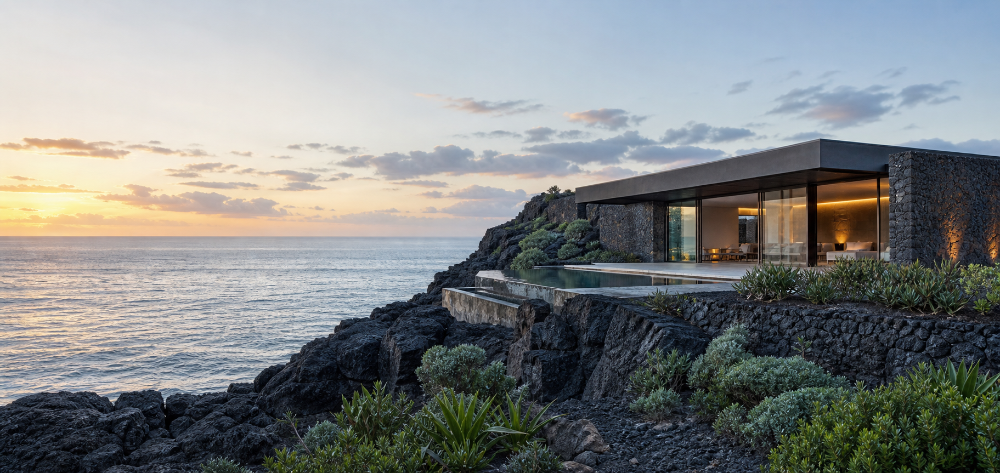

Composition Recipe 01
Media Hero
Layer real media, a project-owned scrim, and readable content without adding a hero
component to Axoloth. The composition comes from axo-pile,
axo-frame, and axo-cover.
Live Preview
Coastal retreat hero
Resize the viewport to see the same intrinsic composition adapt without breakpoint classes.

Stay where the land meets weather.
A quiet coastal retreat shaped around wind, stone, and the long northern light.
Complete HTML
A standalone document
The theme file only supplies visual identity. The HTML below contains the complete structural composition used by the live preview.
<!doctype html>
<html lang="en">
<head>
<meta charset="UTF-8" />
<meta name="viewport" content="width=device-width, initial-scale=1.0" />
<link rel="stylesheet"
href="https://cdn.jsdelivr.net/npm/@quertys/axoloth-style@0.9.0/src/axoloth.css" />
<link rel="stylesheet" href="./theme.css" />
<title>Coastal Retreat</title>
</head>
<body>
<main>
<section class="recipe-media-hero axo-pile" aria-labelledby="hero-title">
<div class="recipe-media-hero__media axo-frame">
<img src="./media-hero.png" alt="Coastal retreat above the ocean" />
</div>
<div class="recipe-media-hero__scrim" aria-hidden="true"></div>
<div class="recipe-media-hero__content axo-cover">
<div class="axo-center axo-stack">
<span class="recipe-media-hero__kicker">North Atlantic / Field Notes 04</span>
<h1 id="hero-title">Stay where the land meets weather.</h1>
<p>A quiet coastal retreat shaped around wind, stone, and northern light.</p>
<div class="axo-cluster">
<a class="axo-button axo-link recipe-media-hero__primary" href="#stay">
Explore the stay
</a>
<a class="axo-button axo-link recipe-media-hero__secondary" href="#journal">
Read the journal
</a>
</div>
</div>
</div>
</section>
</main>
</body>
</html>Axoloth Classes
Structure supplied by the library
-
axo-pilePlaces media, scrim, and content in one grid area. -
axo-frameOwns media cropping and stable dimensions. -
axo-coverCreates the vertically centered hero region. -
axo-centerConstrains readable copy inside the overlay. -
axo-stackControls vertical rhythm between content elements. -
axo-clusterWraps the calls to action without fragile widths. -
axo-button+axo-linkProvide neutral control structure.
Customizable Variables
Supported tuning points
--axo-cover-heightHero block size.--axo-cover-paddingSafe content inset.--axo-frame-ratioMedia aspect-ratio behavior.-
--axo-frame-positionResponsive image focal point. --axo-center-widthReadable copy width.--axo-stack-gapVertical content rhythm.
Project-owned CSS
Visual identity stays local
theme.css chooses the image, scrim gradients, typography, button
colors, and text contrast. These decisions describe this retreat brand, not a
reusable Axoloth layout contract.
Mobile + Desktop
One composition, two crops
Desktop keeps copy on the image's quiet side. Mobile moves content toward the bottom
and adjusts --axo-frame-position; pile, cover, stack, and cluster
continue to own the layout.